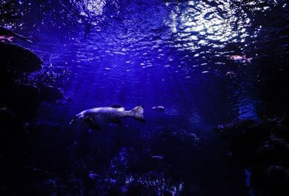
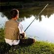
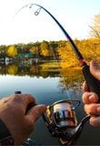
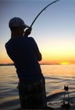
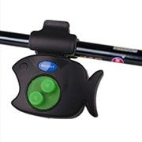
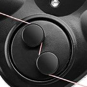

Это уникальное современное устройство, которое выводит рыбалку на совершенно новый уровень. Сигнализатор пользуется большой популярностью среди рыболовов. Корпус обеспечивает высокую защиту от попадания влаги в устройство, резиновый уплотнитель идеально фиксирует сигнализатор который не скользит при поклевке, забрасывании или вываживании рыбы, а световая и звуковая сигнализация отлично подойдет для ловли в любое время суток.
Рыболовный интернет-магазин
Fish indicator сигнализатор поклевки
innovation awards
2020
2020
- Отличная видимость в любую погоду
- Высокая точность срабатывания
- Не реагирует на ветер и волны
Обычная цена:
398грн.
149грн.
Осталось 9 сигнализаторов по акции
Что такое Сигнализатор поклевки?
Зачем нужен сигнализатор поклевки?
-
Поможет не пропустить поклевку
Сигнализатор поклевки это отличное решение при фидерной ловли, очень чувствителен к поклевке и имеет отличную звуковую и световую сигнализацию. Так же это незаменимая вещь если вы используете сразу несколько удочек.
-

Незаменим для ночной рыбалки
Большинство рыб ведут активный образ жизни в темный период суток: сом, лещ, сазан, судак, голавль, налим, язь. Такой сигнализатор станет идеальным помощником в условиях плохой видимости.
Кому пригодится такой гаджет?
-

Новичкам Устройство позволяет безошибочно определить поклевку даже самым начинающим рыбакам
-

Профессионалам Позволяет рыбачить сразу на несколько удочек, а также идеально видеть поклевку на поплавках, которые заброшены далеко
-

Ночным рыбакам Яркий индикатор хорошо виден,а звуковой сигнал хорошо слышен при любых погодных условиях.
Как пользоваться Сигнализатором поклевки?
-  Установите сигнализатор
-  Протяните через сигнализатор леску
Мнение специалиста
“Светозвуковой сигнализатор поклевки - это настоящий шаг навстречу будущему. Даже опытным рыбакам старой закалки не стоит отказываться от современных технологий. Такое устройство позволяет рыбачить уже на совершенно другом уровне. Теперь абсолютно не обязательно пристально всматриваться в поплавок и постоянно вытаскивать его для осмотра наживки. Он не только анализирует состояние вашего крючка, но также и позволяет игнорировать уловки мудрых рыб, которые играются с вашей наживкой и ждут момента когда вы оправдаете её опасения на счет “ловушки”. Это действительно интересное устройство, которое необходимо попробовать каждому рыбаку вне зависимости от его опыта и стажа.”
Иван Затевахин
Кандидат биологических наук,
ведущий программы “Диалоги о рыбалке”
Как сделать заказ?
01
Оставляете заявку на сайте
02
Наш менеджер уточняет детали заказа
03
Доставляем в течение
1-3 дней
04
Оплачиваете при получении
Отзывы покупателей
Заказал себе “Сигнализатор поклевки”. Доставили всего за 2 дня. Все мужики нехило так удивились, когда я его взял с собой на рыбалку. Диковинка знатная, всем пришлась по вкусу. Позволяет использовать еще больше удочек и рыбачить темным вечером.
Я сначала очень скептически отнесся к данной новинке, но очень зря. Световой и звуковой индикаторы очень удобные, пропустить клёв с ними, наверное, невозможно. Я уже 2 раза выезжал с ними на рыбалку. Впечатления пока только положительные.
Стаж в рыбалке у меня огого и даже есть эхолот, лодка и тому подобное. В данном сигнализаторе я сразу разглядел потенциал и решил заказать. Теперь ставлю две удочки по обе стороны лодки и спокойно могу отвлечься на “перекус”. Штука полезная, рекомендую!
Закажите прямо сейчас
FISH INDICATOR сигнализатор поклевки
innovation awards
2020
2020
До конца акции осталось:
00
часов
00
минут
00
секунд
Обычная цена:
398грн.
149грн.